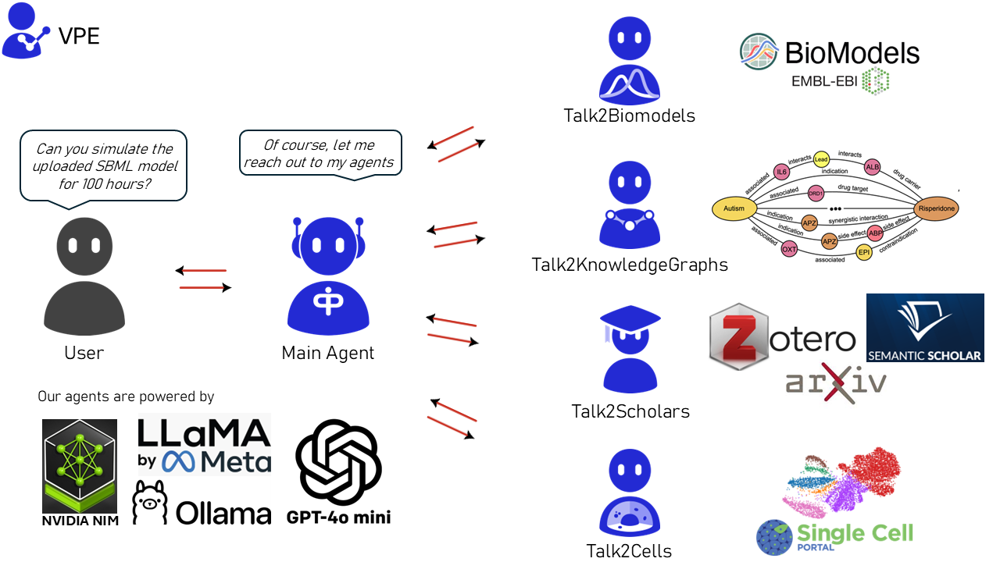

Home


Introduction
Welcome to AIAgents4Pharma – an open-source project by Team VPE that brings together AI-driven tools to help researchers and pharma interact seamlessly with complex biological data.
Our toolkit currently consists of the following agents:
- Talk2BioModels (v1 released; v2 in progress): Engage directly with mathematical models in systems biology.
- Talk2KnowledgeGraphs (v1 in progress): Access and explore complex biological knowledge graphs for insightful data connections.
- Talk2Scholars (v1 in progress): Get recommendations for articles related to your choice. Download, query, and write/retrieve them to your reference manager (currently supporting Zotero).
- Talk2Cells (v1 in progress): Query and analyze sequencing data with ease.
- Talk2AIAgents4Pharma (v1 in progress): Converse with all the agents above (currently supports T2B and T2KG)

News
- T2B and T2KG accepted at the MLGenX workshop during ICLR #2025 in Singapore. Read More

Getting Started
Installation
Option 1: Docker (stable-release)
We now have all the agents available on Docker Hub.
To run Talk2AIAgents4Pharma / Talk2KnowledgeGraphs
Both agents require Ollama to run embedding models like nomic-embed-text. We use a single startup script that automatically detects your hardware (NVIDIA, AMD, or CPU) and handles container startup, model loading, and service orchestration.
1. Clone the repository and navigate to the agent directory
git clone https://github.com/VirtualPatientEngine/AIAgents4Pharma
cd AIAgents4Pharma/aiagents4pharma/<agent>
Replace <agent> with either:
talk2aiagents4pharmatalk2knowledgegraphs
2. Setup environment variables
Copy and configure your .env file:
cp .env.example .env
Then edit .env and add your API keys:
OPENAI_API_KEY=... # Required for both agents
NVIDIA_API_KEY=... # Required for both agents
OLLAMA_HOST=http://ollama:11434 # Required for AA4P / T2KG
LANGCHAIN_TRACING_V2=true # Optional for both agents
LANGCHAIN_API_KEY=... # Optional for both agents
Additional Notes for Windows Users
3. Start the application
chmod +x startup.sh
./startup.sh # Add --cpu flag to force CPU mode if needed
To Run Talk2Biomodels / Talk2Scholars
Talk2Biomodels
docker run -d \
--name talk2biomodels \
-e OPENAI_API_KEY=<your_openai_api_key> \
-e NVIDIA_API_KEY=<your_nvidia_api_key> \
-p 8501:8501 \
virtualpatientengine/talk2biomodels
Talk2Scholars
docker run -d \
--name talk2scholars \
-e OPENAI_API_KEY=<your_openai_api_key> \
-e ZOTERO_API_KEY=<your_zotero_api_key> \
-e ZOTERO_USER_ID=<your_zotero_user_id> \
-e NVIDIA_API_KEY=<your_nvidia_api_key> \
-p 8501:8501 \
virtualpatientengine/talk2scholars
4. Access the Web UI
Once started, the agent is available at:
http://localhost:8501
To use Talk2AIAgents4Pharma or Talk2KnowledgeGraphs, you need a free NVIDIA API key. Create an account and apply for free credits here.
To use Talk2BioModels or Talk2Scholars, you need a free NVIDIA API key. Create an account and apply for free credits here.
Only for Talk2Scholars, you also need a Zotero API key, which you can generate here. (For all other agents, the Zotero key is not required.)
If you are using docker on Windows, please follow these Windows Setup Notes.
LangSmith support is optional. To enable it, create an API key here.
More on running multiple agents simultaneously
Option 2: git (for developers and contributors)
- Clone the repository:
git clone https://github.com/VirtualPatientEngine/AIAgents4Pharma
cd AIAgents4Pharma
- Install dependencies:
We use Conda as our environment manager, Follow the official Quickstart install instructions provided by anaconda/miniconda.
conda create --name AIAgents4Pharma python=3.12 -y && conda activate AIAgents4Pharma && pip install --upgrade pip && pip install -r requirements.txt
- Initialize API Keys
export OPENAI_API_KEY=.... # Required for all agents
export NVIDIA_API_KEY=.... # Required for all agents
export ZOTERO_API_KEY=.... # Required for T2S
export ZOTERO_USER_ID=.... # Required for T2S
export LANGCHAIN_TRACING_V2=true # Optional for all agents
export LANGCHAIN_API_KEY=... # Optional for all agents
To use Talk2AIAgents4Pharma, Talk2BioModels, Talk2KnowledgeGraphs, or Talk2Scholars, you need a free NVIDIA API key. Create an account and apply for free credits here.
Only for Talk2Scholars, you also need a Zotero API key, which you can generate here. (For all other agents, the Zotero key is not required.)
To use Talk2Scholars, you must have FAISS installed through Conda. Follow installation instructions for your OS here.
To use Talk2AIAgents4Pharma or Talk2KnowledgeGraphs, you must have Ollama installed. Follow installation instructions for your OS here.
After installing, pull the nomic-embed-text model and start the server by running:
ollama pull nomic-embed-text && ollama serve
More details about the model are available here.
Additionally on Windows, the pcst_fast 1.0.10 library requires Microsoft Visual C++ 14.0 or greater.
You can download the Microsoft C++ Build Tools here.
LangSmith support is optional. To enable it, create an API key here.
Please note that this will create a new tracing project in your Langsmith
account with the name T2X-xxxx, where X can be AA4P (Main Agent),
B (Biomodels), S (Scholars), KG (KnowledgeGraphs), or C (Cells).
If you skip the previous step, it will default to the name default.
xxxx will be the 4-digit ID created for the session.
- Launch the app:
streamlit run app/frontend/streamlit_app_<agent>.py
Replace <agent> with the agent name you are interested to launch:
talk2aiagents4pharmatalk2biomodelstalk2knowledgegraphstalk2scholarstalk2cells
For detailed instructions on each agent, please refer to their respective modules.
Option 3: pip (beta-release)
pip install aiagents4pharma
Check out the tutorials on each agent for detailed instructions.
Contributing
We welcome your support to make AIAgents4Pharma even better.
All types of contributions are appreciated — whether you're fixing bugs, adding features, improving documentation, or helping with testing, every contribution is valuable.
How to contribute
- Star this repository to show your support.
- Fork the repository.
- Create a new branch for your work:
git checkout -b feat/your-feature-name
- Make your changes and commit them:
git commit -m "feat: add a brief description of your change"
- Push your branch:
git push origin feat/your-feature-name
- Open a Pull Request.
Areas where you can help
- Beta testing for Talk2BioModels and Talk2Scholars.
- Development work related to Python, bioinformatics, or knowledge graphs.
Contacts for contributions
- Talk2Biomodels / Talk2Cells: @gurdeep330, @lilijap, @dmccloskey
- Talk2KnowledgeGraphs: @awmulyadi, @dmccloskey
- Talk2Scholars: @ansh-info, @gurdeep330, @dmccloskey
Please refer to our CONTRIBUTING.md for more detailed contribution guidelines.
Feedback
If you have questions, bug reports, feature requests, comments, or suggestions, we would love to hear from you.
Please open an issue or start a discussion